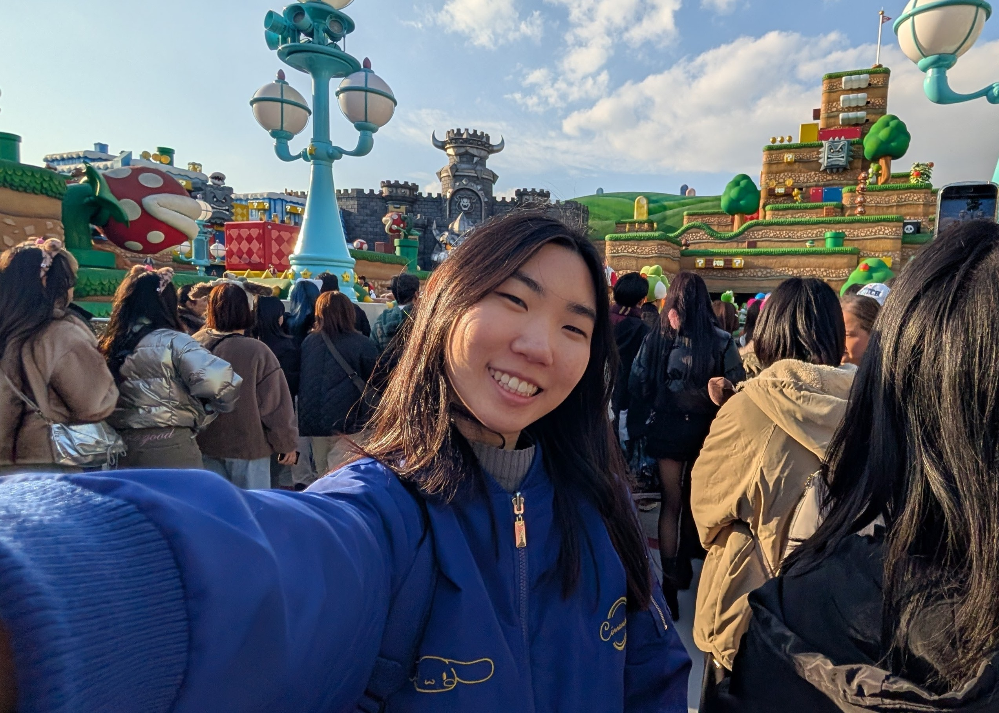

Sobre mim

Minha Trajetória
Desde a infância, sempre fui muito apaixonada por jogos, especialmente pelos momentos de
diversão que compartilhava com os meus primos. Meu primeiro contato com esse universo
foi através do Nintendo Wii, que marcou profundamente minha infância.
Essa vivência despertou em mim não apenas o gosto por jogos, mas também uma curiosidade
constante de como as coisas funcionavam através das telas e com isso fez com que eu me
aproximasse naturalmente da área de tecnologia.